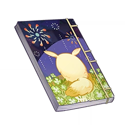

Inazuma · Books & Literature
Let's Go, Dodoco!
Klee and Yoimiya's shared story sends Dodoco on an Inazuma adventure, printed alongside Alice's travel guide.

A story Klee and Yoimiya made together
Let's Go, Dodoco! is a single illustrated Quest Item introduced during the Hues of the Violet Garden event. Its editor's note calls it the combined work of an older and younger girl; the event identifies the pair as Yoimiya and Klee. Klee presents the finished story as a gift for the Traveler.
That context corrects a common catalog mistake: Alice is Klee's mother and wrote the separate Teyvat Travel Guide, but the game does not credit Alice with this story. The two books are published together, not authored by the same person.
The mother's line and Klee's Dodoco
The story opens with Dodoco recalling a gentle mother who says that every Dodoco will one day ride the wind and waves on an adventure. That line echoes Klee's relationship with her mother, Alice, who made the Dodoco doll and attached it to Klee's backpack so she would have a friend when alone.
The parallel is thematic, not an author credit. The printed editor's message identifies two girl contributors, while the event quest shows Klee and Yoimiya writing the story together.
Dodoco's journey to the nation of lightning
In the story, Dodoco is excited when Klee says she is going to Inazuma. The book balances the dangers of crossing rough wind and waves with the friends' promise to protect each other. It says that adventure would mean little to Dodoco without Klee, and that having her smile and Albedo's stories makes the voyage worthwhile.
The narrative then imagines Inazuma as a land where everything looks purple. It turns Klee's festival visit into a compact fantasy trip rather than a geographic guide or a record of how Inazuma literally looks.
Mt. Yougou, tengu wings, and fireworks
The Traveler leads the group up Mt. Yougou to the Sacred Sakura. After falling asleep, Klee, Yoimiya, and the Traveler wake with wings like a tengu; Paimon needs none. Their flying creates a gust that musses a shrine maiden's hair, and the friends flee before they stop to eat the onigiri they brought.
At Yoimiya's fireworks show, the book closes on imagination, friendship, and the invitation for its reader to go adventuring with friends. The winged journey and shrine-maiden mishap are playful story events, not additional confirmed history about Inazuma.
How the story made it into print
In A Story for You, the festival's printing schedule has already closed when Klee asks Aratani to publish Dodoco's story. Yoimiya offers to paint copies by hand so Klee will not have to wait. Yae Miko instead proposes shortening their manuscript to fit alongside another work in the printing batch.
That other book is Alice's Inazuma edition of Teyvat Travel Guide. The event says the extra copies of Klee and Yoimiya's story are included as a free gift with purchases of the guide. Klee is delighted that her book will be released with her mother's, describing it as going on an adventure together.
Keep the two books and their authors distinct
Let's Go, Dodoco! is Klee and Yoimiya's collaboration. Teyvat Travel Guide is Alice's separate travel-writing series, and the Inazuma volume is the one printed in the same batch. The pairing explains the distribution arrangement and Klee's excitement; it does not transfer Alice's authorship to the girls' story or the girls' authorship to the guide.
Read the Quest Item as a gift story rooted in an event friendship. It confirms what Klee and Yoimiya made and how the publisher released it, but its fantasy episodes are not independent evidence for magical wings, Dodoco creatures, or other new facts about Teyvat.
This is an original CoreGG reading guide, not an official HoYoverse article or a reproduction of the game text. Source links below identify the records used so you can check the original context.
Sources & references
Check these sources for the original game text and reference trail.